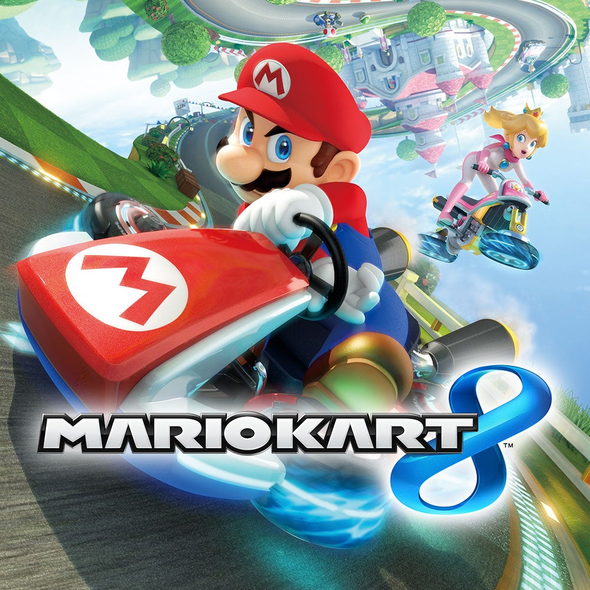

Mario Kart 8
Mario Kart 8 es un videojuego de carreras desarrollado y publicado por Nintendo. Lanzado en 2014 para Wii U y posteriormente para Nintendo Switch, es la octava entrega principal de la serie Mario Kart. El juego presenta a personajes icónicos de Nintendo compitiendo en diversas pistas llenas de obstáculos y potenciadores.

Forza Horizon 5
Forza Horizon 5 es un videojuego de carreras desarrollado por Playground Games y publicado por Xbox Game Studios. Lanzado en 2021, es la quinta entrega de la serie Forza Horizon y se desarrolla en un mundo abierto basado en México. El juego ofrece una amplia variedad de vehículos y eventos de carreras, así como un entorno dinámico y diverso.